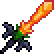

Меч всадника
Меч всадника (The Horseman's Blade) — оружие, добавленное в версии 1.2.1. Выпадает с тыквенного короля.
При нанесении урона по врагам призывает тыквы, летящие на ближайших врагов. Тыквы имеют свойства автонаведения и прохождения сквозь блоки. Они наносят урон, равный 150% от урона самого меча, а также на них действуют его улучшения: флаконы, огненная рукавица или ледяная броня. Меч имеет автоатаку. Если зажать кнопку автоатаки, то персонаж не сможет развернуться в противоположную сторону.
При атаке большого количества врагов тыквы появляются в гигантских количествах, т.к. создаются за каждый удар по каждому врагу. Из-за такого «массового» урона меч всадника можно назвать одним из лучших мечей в игре. Однако существует определённый лимит на количество тыкв, находящихся в мире, что существенно снижает эффективность этого меча.
Меч всадника

Характеристики
Тип Оружие Меч
Урон 150+150

Скорость 26 (Средняя)
Атак/сек 2.3
Крит. шанс 4%
Отбрасывание 7.5 (Очень сильное)
Редкость Желтая
Продажа 10

Лучшая модификация Легендарный
Кол-во исследований 1 исследование
Баги
Примечания
Тыквы при соприкосновении с горшками разрушают их, продолжая лететь во врагов.
Тыквы спавнятся и от врагов из статуй, что позволяет сделать арену для событий и боссов с помощью баффов и самих тыкв. Для этой арены нужно поставить статуи враждебных мобов (желательно с маленьким количеством хп) и подключить 1/4 секунд таймеру, потом использовать зелья, активировать событие или босса,включить таймер и бить мобов - неактуально с версии 1.4.4.